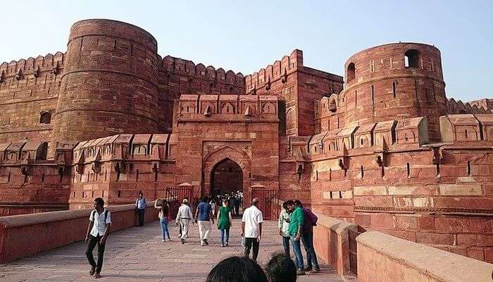
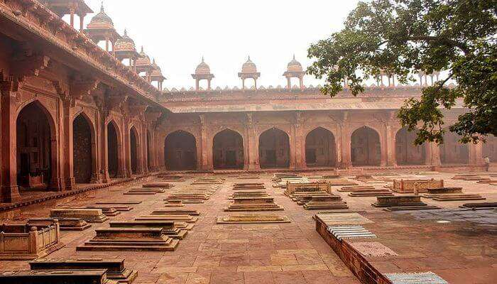
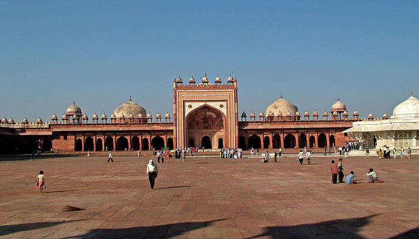
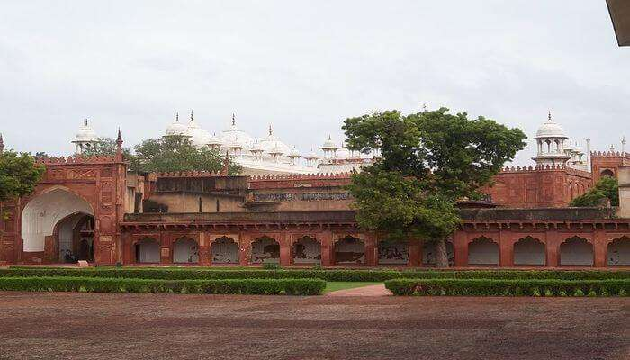
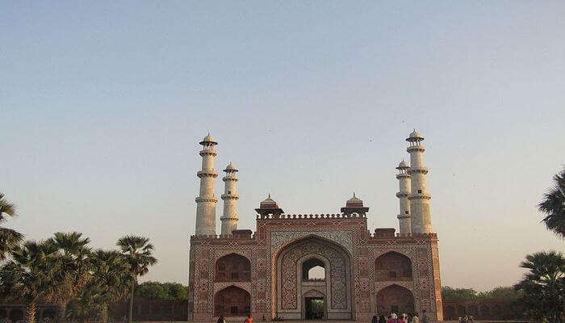
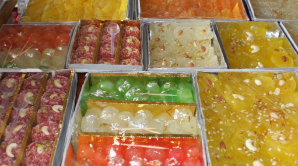
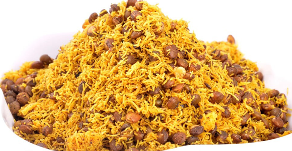
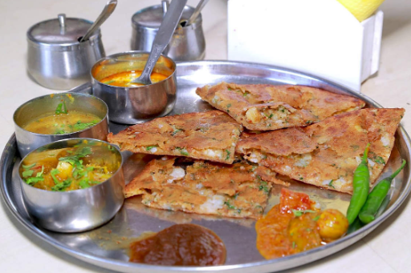

AGRA
Agra is a city on the banks of the Yamuna river in the Indian state of Uttar Pradesh, about 210 kilometres (130 mi) south of the national capital New Delhi and 335 km west of the state capital Lucknow. With a population of roughly 1.6 million, Agra is the fourth-most populous city in Uttar Pradesh and twenty-third most populous city in India.

Best Places to visit:-
1. Agra Red Fort:-

A UNESCO world heritage monument, Agra Red Fort stands as a glorious tribute to the erstwhile Mughal Empire’s heydays. Spread over a gigantic area of 3,80,000 sq. meters, this fort was built by Emperor Akbar in the year 1556, and later renovated in 1573 with red sandstone.
2. Fatehpur Sikri:-
Fatehpur Sikri is one of the must-visit Agra destinations. It is a historical town in the District of Agra and had been the erstwhile capital city of many Mughal Emperors including Akbar. Before being the capital city, Sikri was a decrepit village.
3. Jama Masjid:-

The list of notable places to visit in Agra will be incomplete without mentioning Jama Masjid. Though a religious monument, it is known for its astounding loftiness and also its architectural richness which appeals to everybody. This four minaret Masjid, which can easily accommodate up to 25,000 people to pray at a time, has three gateways.
4. Moti Masjid:-
Talking of masjids, there is another one called the Moti Masjid which is also one of the best places to visit in Agra. The famous Moti Masjid is one such monument that is known for its architecture and one which should not be missed out. Built by Mughal King Shah Jahan
5. Sikandra Fort:-

Sikandra Fort is one of the most historic spots and also considered one of the important places to visit in Agra. This deep red sandstone structure is an outstanding one for its timeless architectural beauty and showcases the glorious past of the region.
Must try Dishes:-
1. Petha:-

Just like every city has its own signature dish that spreads all throughout the nation with its name. Similarly, Agra is famous for its Petha.This treat can beat any other famous food in Agra .
2. Dalmoth:-
Agra is one of the unique cities in India where the starters or snacks are much more illustrious than the main course meals. Dalmoth is one of such examples that comes from the lentils.
 3. Paratha:-

Paratha is a famous dish of entire Northern India. This is basically a morning breakfast dish that in spite of being oily and full of starch or potatoes is consumed heavily by the Indians before starting their morning routine.
Must visit Restaurants:-
1. Spice Restaurant:-

Authentic Goan curries made with home-made masala and traditional recepies.
and Portuguese inspired dishes espically famous for its 11 layered Pancake.
A great restaurent to visit . Have a visit there . No 1 restraurent of agra with best facilities , and a lot variety of food.
2. Souza Lobo:-
This restaurant has a no-fuss rustic charm offering a variety of seafood and many moreand Portuguese inspired dishes espically famous for its 11 layered Pancake.
A great restaurent to visit . Have a visit there . No 1 restraurent of agra with best facilities , and a lot variety of food.

3. Viva Panjim:-

A hundred and fifty year old ancestral home converted into a restaurant, serves a variety of Goan
and Portuguese inspired dishes espically famous for its 11 layered Pancake.
A great restaurent to visit . Have a visit there . No 1 restraurent of agra with best facilities , and a lot variety of food.